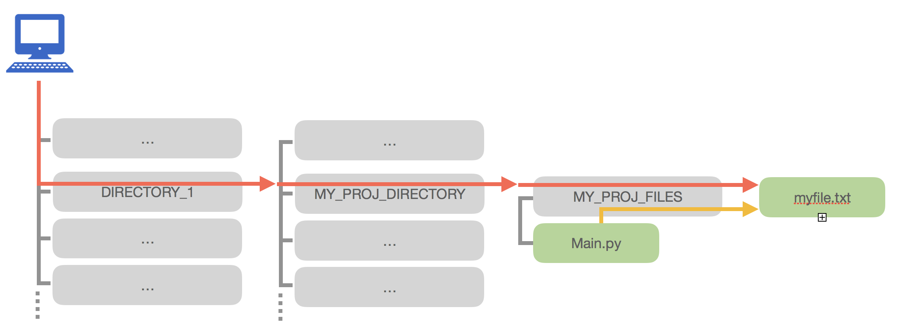

Recursion and working with files
Recursion
What is it about?
- The process of defining something in terms of itself
- In Python, this happens when a function calls itself
Why do we need it?
- The code looks clean and elegant
- A complex task is broken down into simpler sub-problems
- Some data structures like trees are easier to explore using recursion
# Example: recursive function for calculating n! (factorial)
def factorial_recursive(n):
#Base case
if n == 1:
return 1
#Recursive case: n * (n-1)!
else:
return n * factorial_recursive(n-1)
print(factorial_recursive(5))
#OUTPUT: 120
Reading and writing files
- In Python, we can read external files and create/write new files with content inside
- We need to provide the location of the file inside our system, i.e., the path to the file. If the path is in the current working directory, you can just provide the filename
myfile.txt. If not, then you have to provide the path of the fileDIRECTORY_NAME/myfile.txt. We have two types of paths - Absolute file path: are notated by a leading forward ("/") slash or drive label (e.g., "C:"). The path starts from the root of the file system. E.g.
/DIRECTORY_1/MY_PROJ_DIRECTORY/MY_PROJ_FILES/myfile.txt - Relative file path: are notated by a lack of a leading forward slash or drive label. It is interpreted from the perspective of your current working directory.
MY_PROJ_FILES/myfile.txt
/DIRECTORY_1/MY_PROJ_DIRECTORY/MY_PROJ_FILES/myfile.txt
MY_PROJ_FILES/myfile.txt

# Writing a file:
with open("files/txt_sample.txt","w") as my_file:
my_file.write("the file content!")
# Reading a file:
with open("files/txt_sample.txt","r") as my_file:
for line in my_file:
print(line)
CSV and JSON files
A comma-separated values (CSV) file is a delimited text file that uses a comma to separate values. Each line of the file is a data record. Each record consists of one or more fields, separated by commas. A CSV file typically stores tabular data (numbers and text) in plain text, in which case each line will have the same number of fields.
import csv
# Reading a CSV file:
with open('files/csv_sample.csv', mode='r') as file:
csvFile = csv.reader(file)
for line in csvFile:
print(line)
# Writing a CSV file:
with open('files/csv_sample.csv', mode='w') as csvfile:
csvwriter = csv.writer(csvfile)
# fields is a list values
fields = ["roma","torino","milano"]
csvwriter.writerow(fields)
# rows is a list of lists
rows = [["genova","bologna","parma"], ["palermo","napoli","bari"]]
csvwriter.writerows(rows)
A JSON file is used to transmit data objects consisting of attribute–value pairs and array data types
import json
# Reading a JSON file:
with open('files/json_sample.json', mode='r') as jsonfile:
json_object = json.load(jsonfile)
# Writing a JSON file:
with open('files/json_sample.json', mode='w') as jsonfile:
a_dict = {"Federico":35,"Stefano":22,"Sandro":31}
json.dump(a_dict, jsonfile)
Exercises
1st Exercise
We want to define a recursive function that simulates a pokemon tournament. The number of pokemons participating in the tournament is 8. Each pokemon is defined using 3 values: (1)name, (2)attack-points, and (3) defense-points. A pokemon could be therefore characterized using a tuple of 3 elements, e.g. ("Poliwag",10,5). The tournament could be defined as a list of 8 pokemons (i.e. tuple). For instance:
pokemon_tournament = [("Poliwag",10,5),("Charmander",15,2),("Abra",8,7),("Pidgey",4,5),("Goldeen",6,8),("Bulbasaur",12,10),("Charmeleon",18,8),("Psyduck",3,4)]
To determine the champion of the tournament 2 nearby pokemons (according to their order in the list) compete. The pokemon on the left uses the attack-points (second value of the tuple), while the right one uses the defense-points (third value of the tuple), if the attack-points are higher than the defense-points then the pokemon on the left side goes up to the next round, otherwise, the pokemon on the right side does that. The same process will be repeated in the second round too. The tournament ends when we have 1 final winner. For example the winner of the tournament pokemon_tournament is:
# ROUND 1: ("Poliwag",10,5)vs("Charmander",15,2) | ("Abra",8,7)vs("Pidgey",4,5) | ("Goldeen",6,8)vs("Bulbasaur",12,10) | ("Charmeleon",18,8)vs("Psyduck",3,4)
# ROUND 2: ("Poliwag",10,5)vs("Abra",8,7) | ("Bulbasaur",12,10)vs("Charmeleon",18,8)
# THE FINAL: ("Poliwag",10,5)vs("Bulbasaur",12,10)
# THE WINNER: ("Bulbasaur",12,10)
Define a recursive function called pokemon_champion() which takes a tournament (i.e. a list of pokemons) and returns the updated tournament list containing only the champion of the tournament. For instance pokemon_champion(pokemon_tournament) returns the list [ ("Bulbasaur",12,10) ]
def pokemon_champion(pokemon_list):
len_list = len(pokemon_list)
if len_list == 1:
return [pokemon_list[0]]
elif len_list == 2:
p_attack = pokemon_list[0][1]
p_defend = pokemon_list[1][2]
if p_attack > p_defend:
return [pokemon_list[0]]
else:
return [pokemon_list[1]]
else:
mid = len_list // 2
return pokemon_champion(pokemon_champion(pokemon_list[:mid]) + pokemon_champion(pokemon_list[mid:]))
2nd Exercise
The CSV file pokemon_list.csv contains a list of all the pokemons with their attacking and defending points, such that it contains three columns (in order): "Name","Attack","Defense". The total number of pokemons is 800.
2.a) Download the file pokemon_list.csv on your local machine. Write a portion of code in python to read and convert the CSV file into a list of tuples and simulate a mega tournament using the function defined in 1st Exercise (in this case there is no limit of partecipants to the tournament, i.e. previously set to 8).
# Reading a CSV file:
l_of_pokemons = list()
with open('<RELATIVE-PATH>/pokemon_list.csv', mode='r') as file:
csvFile = csv.reader(file)
next(csvFile)
for line in csvFile:
l_of_pokemons.append(tuple(line))
print(pokemon_champion(l_of_pokemons))
2.b) Run the mega tournament 100 times and keep track of all the winners. Each time shuffle randomly the list of pokemons before running the tournament. Note one pokemon might win multiple times. For each winner keep a count for the total number tournament wins.
Hint: the function random.shuffle() shuffles randomly the items of a given list.
Note: you must import the random library, i.e., import random.
Example: random.shuffle([1,2,3,4,5]) => [3,2,1,5,4]
import random
winners_dict = {}
for i in range(0,100):
random.shuffle(l_of_pokemons)
pok_winner = pokemon_champion(l_of_pokemons)[0][0]
if pok_winner not in winners_dict:
winners_dict[pok_winner] = 0
winners_dict[pok_winner] += 1
print(winners_dict)